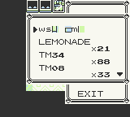
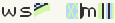

ItemDex/Y:099
(↑ Back to the ItemDex index.)
| Name (transcribed): ws# #m#  Identifier (HEX): 63 Identifier (DEC): 099 Effect pointer: DA7F Unterminated name glitch item?: No Tossable/Sellable?: No Buy Price: 938491 Sell Price: N/A Name bytes: {{{9}}}
|
 (hex:63), or ws m for short, is a glitch item in Pokémon Yellow.
It takes its name from the unused Japanese string "かいがらバッヂ" (ShellBadge), which is also the hex:63 glitch item in Japanese Yellow. The string was untranslated, resulting in the string "ws# #m#" as mojibake.
This glitch item's effect pointer is DA7F in WRAM, which is the beginning of the current box Pokémon data. As such it is very popular for arbitrary code execution as a bootstrap code to items can be written using the species of Pokémon in the box.
Contents
Usage
After setting up the bootstrap code and the payload, simply use ws m from the item list (either in the overworld or in combat) to execute arbitrary code. The quantity of ws m will not decrease, unless it is programmed to do so.
For example applications of ws m, see Generation I item codes. Notice that all applications involving an item list need a bootstrap code to work.
Bootstrapping
Just like with 8F, most bootstrap strategies jump to the third item in the pack ($D321 in Yellow). Below are just two examples of bootstrapping strategies for English games.
10 Pokémon, 9 specific
- 10 Pokémon in your current PC box
- Tangela with 233 HP in slot 1
- Nidoking in slot 2
- Metapod in slot 3
- Haunter in slot 4
- Flareon in slot 5
- Parasect in slot 6
- Growlithe in slot 7
- Tentacool in slot 8
- Grimer in slot 9
- Any Pokemon in slot 10
The bootstrap code translates to the following ASM:
; Initial hl = DA7F
$DA7F <- 0A || ld a, (bc) $DA80 <- 1E || $DA81 <- 07 || ld e, 7 ; e = 7 $DA82 <- 7C || ld a, h ; a = DA $DA83 <- 93 || sub e ; a = D3 $DA84 <- 67 || ld h, a ; h = D3 $DA85 <- 2E || $DA86 <- 21 || ld l, 21 ; l = 21 $DA87 <- 18 || $DA88 <- 0D || jr 0D ; pc = DA96 (...) $DA96 <- 00 || nop $DA97 <- E9 || jp hl ; pc = D321
Much like 8F games, the contents of the item pack (starting from item 3) will be read as ASM code.
11 Pokémon, 8 specific
- 11 Pokémon in your current PC box
- Seel as the 1st Pokémon in the current PC box
- Parasect as the 2nd Pokémon in the current PC box
- Growlithe as the 3rd Pokémon in the current PC box
- Magikarp as the 4th Pokémon in the current PC box
- Psyduck as the 5th Pokémon in the current PC box
- Flareon as the 6th Pokémon in the current PC box
- Tentacool as the 7th Pokémon in the current PC box
- Female Nidoran as the 8th Pokémon in the current PC box
- Three more Pokémon
- Finally, Seel's HP must be 233
Much like 8F games, the contents of the item pack (starting from item 3) will be read as ASM code. Optionally, Seel can be replaced by Butterfree or Mr. Mime.
The bootstrap code translates to the following ASM:
; Initial hl = DA7F
$DA80 <- 3A || ldd a, (hl) ; a = 0B $DA81 <- 2E || $DA82 <- 21 || ld l, 21 $DA83 <- 85 || add l ; a = 2C $DA84 <- 2F || cpl ; a = D3 $DA85 <- 67 || ld h,a ; hl = D321 $DA86 <- 18 || $DA87 <- 0F || jr 0F ; pc = DA97 (...) $DA97 <- E9 || jp hl ; pc = D321
In other European versions
In European non-English games, the item name is nearly the same to that of English Yellow but slightly different. In French and German Versions, it is called "ws l' m". In Italian and Spanish Versions, it is called "ws & m". The setup is also different, because the jump target (the third item in pack) is $D326 rather than $D321. Below is an example.
- 10 Pokémon in your current PC box
- Tangela as the 1st Pokémon in the current PC box
- Nidoking as the 2nd Pokémon in the current PC box
- Metapod as the 3rd Pokémon in the current PC box
- Haunter as the 4th Pokémon in the current PC box
- Flareon as the 5th Pokémon in the current PC box
- Parasect as the 6th Pokémon in the current PC box
- Kadabra as the 7th Pokémon in the current PC box
- Tentacool as the 8th Pokémon in the current PC box
- Grimer as the 9th Pokémon in the current PC box
- Any Pokémon as 10th Pokémon in the current PC box
- Finally, Tangela's HP must be 233
See also
- 8F (hex:5D): A popular glitch item for arbitrary code execution in Pokémon Red and Blue.
- ItemDexJP/Y:099: かいがらバッヂ (ShellBadge), the equivalent glitch item in Japanese Yellow, which also executes the beginning of stored Pokémon data (specifically at address D9B2).
- Glitch City Laboratories' 8F thread (also covering ws# #m# and other arbitrary code execution methods).
- 8F Helper